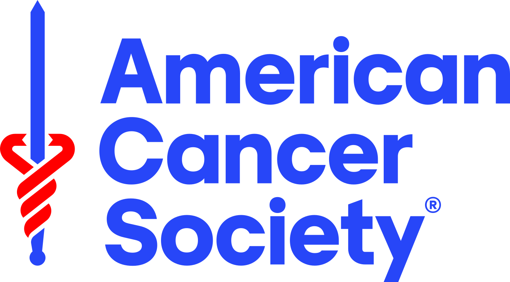
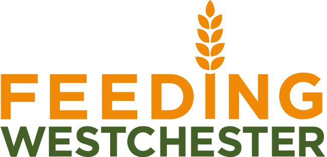

Phoebe's Bat Mitzvah Tzedakah Project
If you're here, it means you found one of the small rubber penguins I've been distributing as part of my Bat Mitzvah project. Thank you for scanning the QR code!
As part of becoming a Bat Mitzvah, I wanted to do something meaningful to help make the world a better place. I chose causes that are close to my heart and I'm asking for your help to support them.
Every donation — no matter how small — makes a real difference. Instead of gifts, I'd love for you to consider giving to one of these amazing organizations.
Choose an organization to support:
Thank you for choosing to donate to this incredible organization. As a family, we used to go to the Bronx Zoo regularly — and we still do! We see all the animals there, and we always have a great time. One of my favorite animals is the penguins. WCS does incredible things for these animals, and I would love to be able to give them a little help. By donating, you would be making the world a better place not only for us, but for all the animals at the zoo — and their kids, and their kids' kids, and so on. This small donation could make a huge difference. Thank you.
Donate
Thank you for choosing to donate to this incredible cause. These people are doing great things. When my grandma passed away, her wish was for people to donate to this organization in her memory, and we will be forever grateful to everyone who did. This organization is trying to make the world a better place. With the money you donate, they could make a breakthrough and a life-changing discovery for so many people who suffer from any form of this terrible disease. Anything helps, and we thank you for doing the right thing.
Donate
Thank you for choosing to donate to this organization. Feeding Westchester is an incredible local cause that delivers food to those who need it most. They connect seniors, children, and families with the help and food they need. Westchester is known for being pretty rich, but the reality is that sometimes everyone needs help. Feeding Westchester is a great cause, and just a small donation could change someone's life — or even multiple people's lives — for the better. Thank you for making this donation.
DonateIn Jewish tradition, a bar mitzvah (for boys) or bat mitzvah (for girls) is a coming-of-age ceremony that takes place around age 13. It marks the moment when a young person takes on the responsibilities of an adult in the Jewish community. An important part of this milestone is tzedakah — the value of giving back and pursuing justice. That's why I chose to create this project: to use my bat mitzvah as an opportunity to make a positive difference in the world.